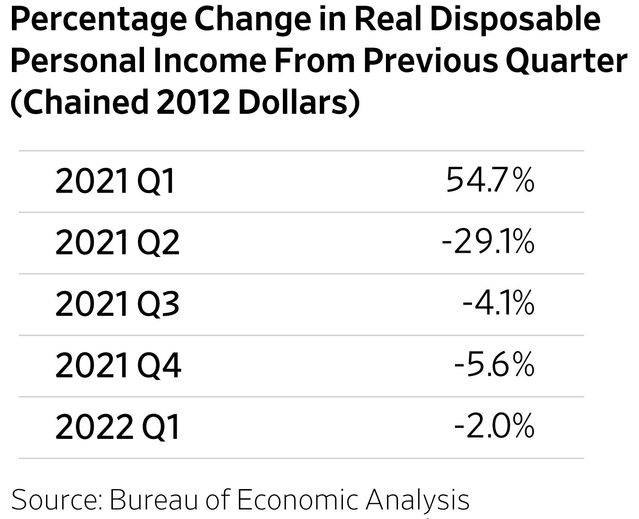
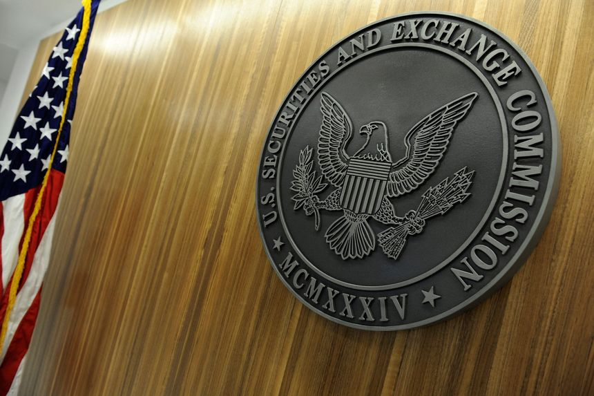
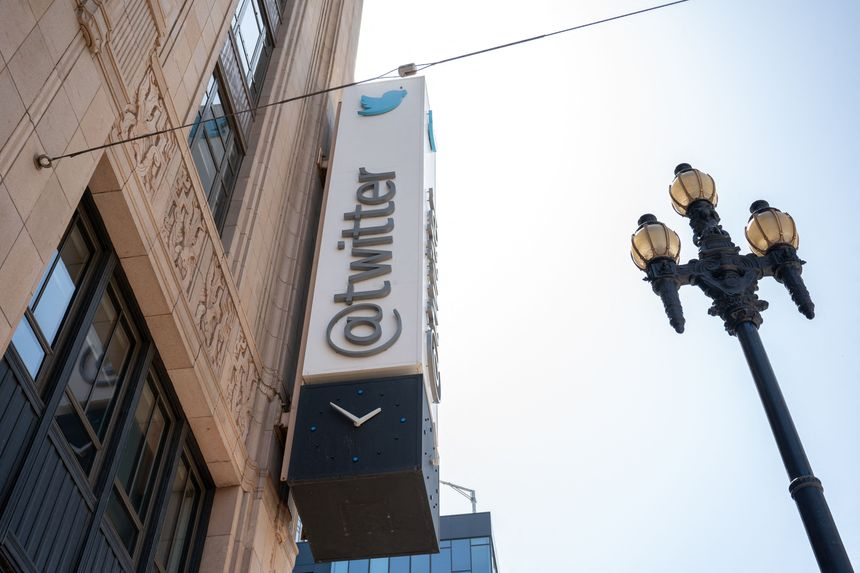
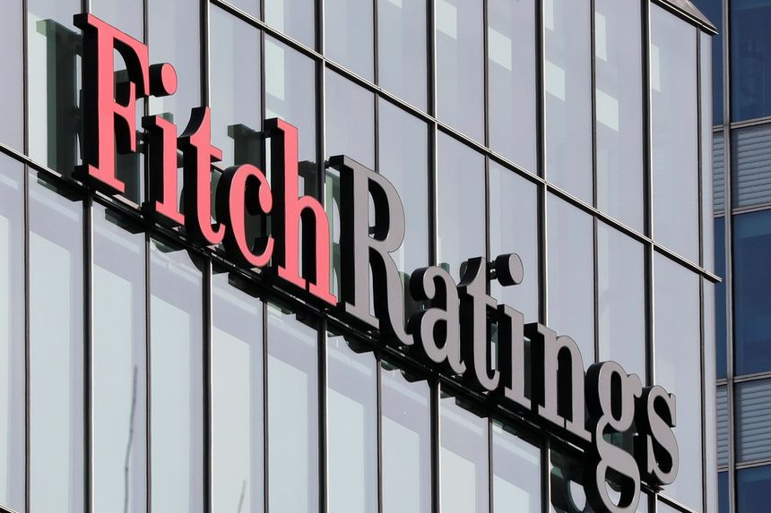
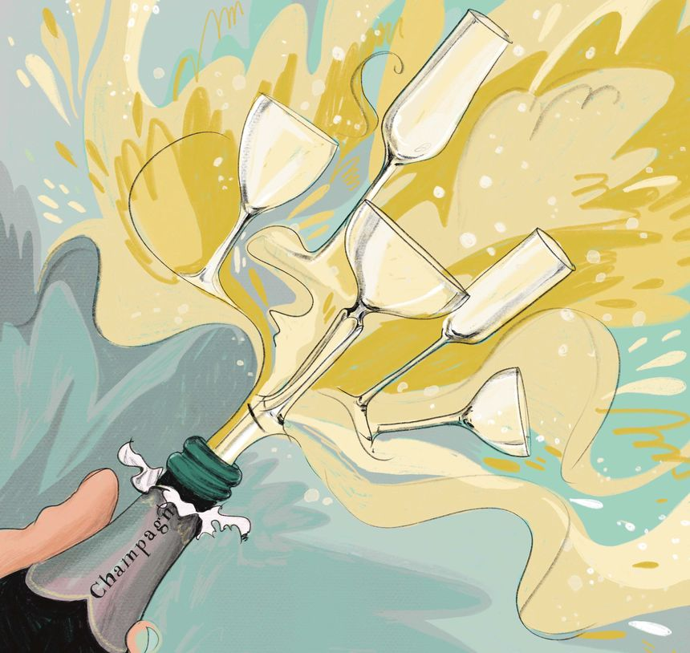
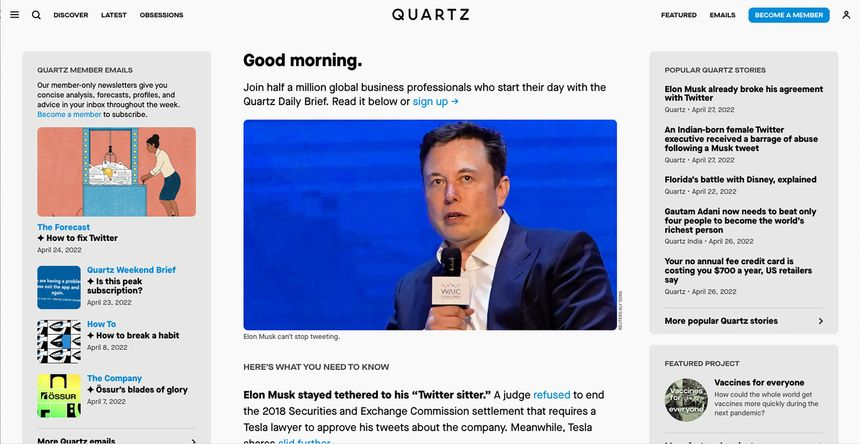
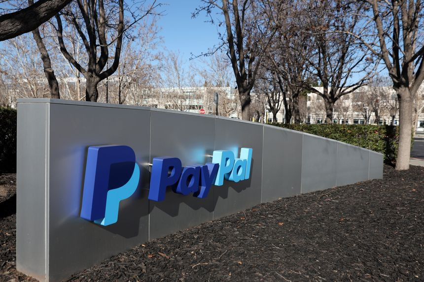
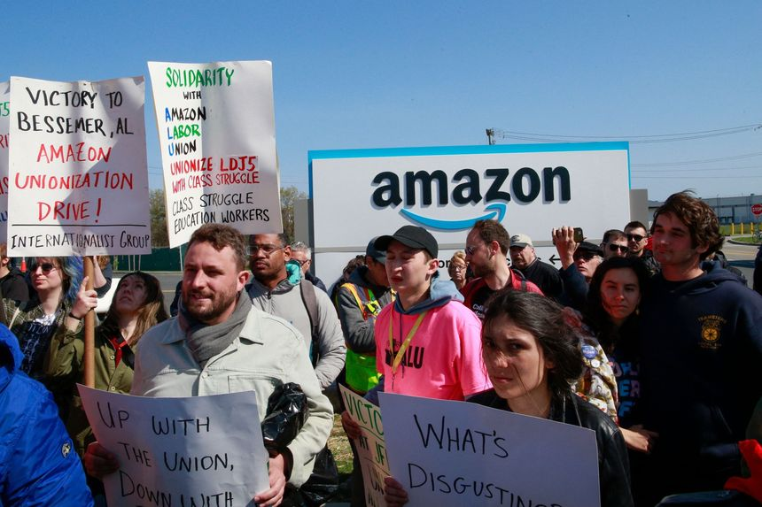

| 时间 | 分类 | 标题 | 副标题 | 正文 | 图片 |
|---|---|---|---|---|---|
| 2022-04-28 21:55:00 | Markets | Labor Department Criticizes Fidelity’s Plan to Put Bitcoin on 401(k) Menu | ‘We have grave concerns with what Fidelity has done,’ says acting assistant secretary Ali Khawar | Labor Department officials believe Fidelity Investments’s plan to allow investors to put bitcoin in their 401(k) accounts risks the retirement security of Americans, a senior administrator said. “We have grave concerns with what Fidelity has done,” Ali Khawar, acting assistant secretary of the Employee Benefits Security Administration, said in an interview with The Wall Street Journal. |
|
| 2022-04-28 19:45:00 | Pro PE Industry News | Carlyle’s Earnings Miss Forecast While Assets Increase | A crowded market is slowing some of its fundraising, but the private-equity firm is adding capital through strategic deals | Carlyle Group Inc.’s assets under management rose to $325 billion by the end of March, but the firm reported weaker-than-expected results for the first quarter, a time marked by market volatility and economic contraction. While the Washington-based firm’s distributable earnings climbed 41% to $302.8 million, or 74 cents a share, from $214.9 million, or 58 cents a share in last year’s first quarter, analysts polled by FactSet were expecting $1 a share. |
|
| 2022-04-28 19:25:00 | Markets | Amazon’s Build-Out Collides With Inflation Surge | Inflationary pressures hit just as e-commerce giant is digesting massive fulfillment network expansion | Amazon . com has a rough summer ahead. Or at least a very busy one. The e-commerce giant’s first-quarter results Thursday afternoon showed starkly the multipronged impact of rising costs and slowing demand in an inflationary environment. Total sales of $116.4 billion were up only 7% year-over-year—the company’s slowest growth rate in at least 12 years. That was in line with Wall Street’s estimates, but operating income of about $3.7 billion was 31% below analysts’ targets. |
|
| 2022-04-28 19:13:00 | CIO Journal | Boston’s New CIO to Focus on Unlocking City Data | Santiago Garces will start as CIO of the New England city in May, following top roles in open-data efforts in South Bend and Pittsburgh | ||
| 2022-04-28 19:02:00 | Opinion | Rumors of Stagflation in First Quarter GDP | The economy surprises economists by shrinking 1.4%, which should kill a tax increase. |  | |
| 2022-04-28 18:55:00 | Opinion | Congress’s Turn to Step Up on Ukraine | Biden’s request to help Kyiv is an investment in U.S. security. | The Biden Administration on Thursday rolled out a $33 billion request for assistance for Ukraine, and let’s hope Congress doesn’t suddenly plead poverty. Vladimir Putin seems set on a long war, and the investment in defeating him will be cheap if it succeeds. About $20 billion of the package is earmarked for military aid, with more for a mix of humanitarian and economic assistance, as well as sanctions enforcement. “The cost of this fight is not cheap. But caving to aggression is going to be more costly, if we allow it to happen,” said President Biden. |
|
| 2022-04-28 18:53:00 | Opinion | Americans for Merit-Based Admissions | Poll respondents say academic achievement matters more than race. | Progressives are preoccupied with imposing racial preferences in education and hiring, but the American public wants these decisions to be based on merit. Witness the results of a new Pew Research Center poll. The survey, conducted in March, asked more than 10,000 respondents what factors should matter for college admissions. In a landslide, respondents favored academic achievement over race and gender. |
|
| 2022-04-28 18:52:00 | Risk & Compliance Journal | U.S. Court Names Hytera Employees Charged in Alleged Motorola Trade-Secret Theft | An unsealed document revealed the names of seven individuals who allegedly stole trade secrets from Motorola | ||
| 2022-04-28 18:47:00 | Opinion | The Supreme Court’s McGirt Dilemma | The Justices chew on how to fix a problem of their own making. | ||
| 2022-04-28 18:26:00 | Opinion | Putin Really May Break the Nuclear Taboo in Ukraine | It seems unthinkable, but American leaders’ failure to think about it heightens the risk it will happen. | ||
| 2022-04-28 18:05:00 | Opinion | If We Get a Recession in 2022 or 2023, It’ll Be a Mild One | In the 1970s, ‘stagflation’ caught policy makers by surprise. Their successors have learned the lesson. | ||
| 2022-04-28 18:04:00 | Opinion | Sophisticated Private Investors Don’t Need the SEC’s Protection | New rules would regulate private funds that Congress specifically exempted from federal meddling. |  | |
| 2022-04-28 18:02:00 | Opinion | Harvard, Slavery and Judaism | What the story of Judah Monis tells us about America and the children of Israel. | ||
| 2022-04-28 18:01:00 | Books & Arts | ‘The Case of the Married Woman’ Review: After a Scandal, She Fought Back | In an era when wives had no rights, Caroline Norton’s husband took away her children. She took the battle to the court of public opinion. | ||
| 2022-04-28 18:01:00 | CMO Today | Twitter Earnings Shed Little Light on Ad Progress | The social-media company is still scheduled to pitch ad buyers next week at a NewFronts presentation |  | |
| 2022-04-28 17:44:00 | Books & Arts | ‘Ridley Road’ Review: Evil on the Rise | A four-part ‘Masterpiece’ series looks at the re-emergence of Nazis in 1960s London. | ||
| 2022-04-28 17:42:00 | Books & Arts | ‘Ten Percent’ Review: Cutthroat Competition | Based on the French series ‘Call My Agent!,’ the show follows the ups and downs of a turbulent London talent agency. | Based on the French series “Call My Agent!” and set in London, the eight-part “Ten Percent” is the sort of fiction whose appeal, emotional or other, will at first seem elusive. The lead characters in John Morton’s drama—employees of the Nightingale Hart talent agency including agency head Richard Nightingale (Jim Broadbent); his son and colleague Jonathan (Jack Davenport); senior partner Stella Hart (Maggie Steed); and fellow agents Rebecca Fox (Lydia Leonard) and Dan Bala (Prasanna Puwanarajah)—are, at first sight, flat, undistinguished and predictable as they go about their task of finding work for clients hoping to secure their place in show business. But it’s a measure of the speed with which writer-director Morton’s skills make themselves felt that “Ten Percent” quickly establishes something close to a perfect blend of satire and geniality in this portrait of a ruthlessly competitive world. One of the most compelling performances in a work amply endowed with them, and in which prominent British actors sometimes play themselves, is that of Tim McInnerny as the aging actor and original Nightingale client Simon Gould. In the opening episode, the British staff at Nightingale Hart is faced with an increasing array of challenges—its trusted guide and leader, Richard, dies. It is faced, additionally, with a possibility more troubling than any other—there are signs that Americans are moving in for a takeover. But this is not the only challenge confronting the British dug in at Nightingale Hart. An American executive is planning a personal visit. Given the described tenor of life in the place, he won’t lack for matters of interest to report. |
|
| 2022-04-28 17:39:00 | Opinion | ‘Funny Girl’ Review: Big Musical Shoes to Fill | Beanie Feldstein takes on the role made iconic by Barbra Streisand in the first major revival of the 1964 musical. | New York There is a reason that the 1964 musical “Funny Girl,” a hit on Broadway and a blockbuster movie, has never seen a major revival, and it doesn’t take a forensic scientist to unearth it. As much, if not more, than any musical, the show is indelibly associated with its original star, Barbra Streisand, around whom it was molded, if not shrink-wrapped, after she was cast. And as anyone who has watched her career knows—and most are at least aware of its contours—Ms. Streisand is a talent as singular as any in American popular culture. |
|
| 2022-04-28 17:27:00 | Business | Robinhood Reports 43% Revenue Decline | The brokerage has been adding a range of new products to build up its user base | Robinhood Markets Inc.’s revenue fell to $299 million in the first quarter, a decline of 43% from the same period last year and the company’s fifth consecutive quarterly drop. The company narrowed its loss to $392 million from a $1.4 billion loss in the same period last year. Its stock fell 10% in aftermarket trading Thursday. |
|
| 2022-04-28 16:42:00 | Opinion | Why We Educate for Equity at Medical School | The Association of American Medical Colleges responds on racism, bias and disparities in healthcare. | Regarding Stanley Goldfarb’s op-ed “Keep Politics Out of the Doctor’s Office” (April 19): As medical educators, we have a responsibility to teach future physicians to provide the best care for their patients. This means making sure students have the medical and scientific knowledge they need, including an understanding of environmental, social and economic factors that affect a patient’s health. Our goal, and that of every medical school, is to recruit a diverse class of talented medical students in a holistic fashion and educate them to improve the health of their patients and communities. There is ample evidence that historically marginalized people who live in poverty, as well as members of LGBTQ communities, disproportionately experience poor health and inadequate access to quality care. These inequities are often rooted in systemic discrimination, including racism. |
|
| 2022-04-28 16:41:00 | Opinion | Donor’s Choice: The Question of Philanthropy | Who gets to call the shots? And for how long? | Reading Leslie Lenkowsky’s review of “Private Virtues, Public Vices” by Emma Saunders-Hastings (Bookshelf, April 20), I couldn’t help but think about Julius Rosenwald, the great philanthropist who built Sears, Roebuck & Co. and donated masses of money. He sponsored Chicago’s Museum of Science and Industry and established more than 5,000 schools for African-Americans in the Jim Crow South. It was Rosenwald’s desire to discontinue his foundation upon his passing. He believed that his contributions were needed only during the time that he could guide his efforts. He passed on his wealth to his children, all of whom became philanthropists themselves. It would be a dream to think that today’s plutocrats could feel as comfortable discontinuing their influence in a timely fashion. |
|
| 2022-04-28 16:41:00 | Opinion | Look No Further For Your Afternoon Newspaper | Readers enjoy getting their local news on the same day it happens. | Regarding Peter Funt’s op-ed “The Last of the Afternoon Newspapers” (April 20), I salute John Sullivan and his two afternoon newspapers in southwest Montana and chastise those who didn’t look hard enough to find the Argus-Press in Owosso, Mich. Our readers enjoy getting their local news sometimes on the same day it happens. Our roots date back to 1854 and the newspaper has been owned by the Campbell family since 1895. In my 40 years at the paper, we’ve held up production many times, most notably for jarring stories. The Challenger explosion and the 9/11 attacks were two terrible mornings, but by the end of those days we were the only newspaper in the state to have those stories delivered to its readers. |
|
| 2022-04-28 16:30:00 | CFO Journal | Fitch Group Appoints Goldman Sachs Veteran as CFO | Tracey Perini spent more than two decades at the bank |  | |
| 2022-04-28 15:55:00 | Opinion | Thank You, McDonald’s | The burger chain understands that consumers need inflation relief. | ||
| 2022-04-28 15:32:00 | Markets | As Europe Thirsts for Natural Gas, U.S., EU Signal Support for Long-Term Deals | LNG exporters say they need multidecade supply contracts to finance new terminals | As Russia moves to cut off natural gas supplies to parts of Europe, U.S. and European Union officials are indicating that they are more open to longer-term deals to ship American fuel across the Atlantic. The EU and U.S. have pledged to expand LNG, or liquefied natural gas, exports to Europe through 2030. But the U.S. is already sending all it can to Europe, and industry officials say expanding volumes will require new, multibillion-dollar export terminals, which traditionally have required long-term contracts from buyers to line up financing. |
|
| 2022-04-28 15:24:00 | Markets | U.S. Dollar Surges Amid Investor Jitters, Rising Yields | WSJ Dollar Index within striking distance of highest level since 2002 after gaining 1% Thursday | The U.S. dollar extended its rapid climb Thursday, reaching multiyear highs against the euro, the British pound and the yen. The U.S. currency has been one of the few beneficiaries this year of a market battered by geopolitical fears and worries about the consequences of interest-rate increases from the Federal Reserve. |
|
| 2022-04-28 15:02:00 | Life & Work | The Best Glasses for Champagne: What the Pros Use | Flute, coupe, tulip, balloon: Champagne glasses come in many shapes. But which one is the best? Our wine columnist polled wine professionals, and some of their answers surprised her. | RED WINE IS SERVED in a red wine glass and white wine is allotted its own glass, too, but when it comes to Champagne, it seems, anything goes. From coupes to flutes to “tulip” style glasses to Burgundy “balloons,” how does one wine fit such different glassware? The wine professionals I polled regarding the appropriate glass for Champagne expressed firm, sometimes conflicting preferences—though most of them shared a contempt for coupes. |
 |
| 2022-04-28 14:00:00 | Business | Gizmodo Owner G/O Media Buys Business News Site Quartz | Deal marks another move in the consolidating digital-media landscape; a deal price wasn’t disclosed |  | |
| 2022-04-28 13:31:00 | Life & Work | How the ’90s Leather Blazer Took Over Spring (and Your Instagram Feed) | The old-school supermodel staple has lately been spotted on everyone from Kendall Jenner to Kaia Gerber. Here, tips for wearing the season’s jacket sensation. | WE TRIED. We really did, but we couldn’t think of an A-List actress who didn’t wear a leather blazer in the 1990s. Gwyneth Paltrow voted for a black one—as did her character Helen Quilley in 1998’s “Sliding Doors.” Reese Witherspoon went for a wine-colored version, paired with chunky black boots and brownish lipstick, at the 1996 red-carpet premiere of “2 Days in the Valley.” And Jennifer Aniston, at the peak of her “Friends” fame, slipped on a camel style in the Mrs. Whiskerson episode (1999), drolly sporting it alongside a cat that had no coat at all. Also devotees? Claire Danes, Julia Roberts, Jada Pinkett Smith, Neve Campbell, Jennifer Love Hewitt, Sarah Jessica Parker, Winona Ryder and Naomi Campbell. Cindy Crawford, a much-documented fan of the leather blazer pre-Y2K, recently revived the look alongside her mirror-image daughter, Kaia Gerber, bringing the piece full circle. Along with Ms. Gerber, Bella Hadid, Emily Ratajkowski and Hailey Bieber are among the new generation of celebrities gravitating toward the garment. Gucci has brought it back (embossed all over with the label’s logo) as have Saint Laurent (long and single-breasted) and Versace (slim and shrunken). Brigitte Chartrand, vice president of womenswear buying at retailer Ssense, who’s stocked that Versace take, called it her favorite modern interpretation of the trend. “It’s so emblematic [of the era] and we haven’t seen much of this specific style since Gwyneth and Winona wore it in the ’90s,” she said. New York stylist Tyler Okuns points to notable versions by the Row, Khaite and David Koma, while Los Angeles stylist Erin Walsh calls out designs by Staud and Nanushka as her top picks. |
|
| 2022-04-28 13:09:00 | Markets | Natural-Gas Producers: In Thin Air | Geopolitical risks are pushing natural-gas prices, and producer stocks, to the stratosphere | ||
| 2022-04-28 12:00:00 | Business | Why Companies Should Pay More Attention to Customers Last in Line | New research suggests that these customers are more likely to walk away. Making their experience better could go a long way. | ||
| 2022-04-28 11:50:00 | Opinion | Xi Jinping Is Betting It All on Zero Covid | To fight the pandemic, the Chinese Communist Party leader mobilizes forces he will likely find difficult to control. | China’s Leninist political system is very good at mass mobilization but very bad at stopping mass mobilization once it has begun. Mao Zedong proved this most destructively with the Great Leap Forward in 1958. Today Xi Jinping’s bold embrace of the zero-Covid policy, in the face of an increasingly transmissible Omicron variant, is evoking Mao’s legacy and running the risk of repeating Mao’s mistakes. Like Mao, Mr. Xi’s position within the Chinese Communist Party is rock-solid. Yet the grass-roots effort he has mobilized against Covid is gathering internal momentum and is increasingly likely to last past the National Party Congress in October. |
|
| 2022-04-28 11:49:00 | Opinion | Can Prosecutors Refuse to Enforce the Law? | It’s complicated. The answer varies from state to state and may affect the response to rising crime rates. | ||
| 2022-04-28 11:36:00 | Markets | PayPal Hits the Reset Button | Company deeply cut its 2022 guidance, but shares could now stabilize as investors look toward the next big things in digital finance |  | |
| 2022-04-28 11:33:00 | Markets | The GDP Mirage | Even as gross domestic product contracted, demand from U.S. consumers and businesses picked up | ||
| 2022-04-28 11:00:00 | Markets | The Case for Taking the ‘G’ Out of ESG | Why governance isn’t a good way to measure a company’s commitment to stakeholders | Investors often use ESG criteria to measure a company’s commitment to values beyond shareholder returns—in particular to environmental and social priorities. A perplexing question is why governance—the “G” in ESG—is included as a third factor. Governance is unlike E and S. This isn’t to say a commitment to governance is incompatible with a commitment to certain environmental and social causes. But good governance, while required, is conceptually distinct from the first two things, making it an ineffective measure of how socially responsible a company is. |
|
| 2022-04-28 10:52:00 | CMO Today | Interpublic Group Increases Outlook Despite Geopolitical and Public-Health Issues | Ad holding company reported organic net revenue growth of 11.5% in first quarter | ||
| 2022-04-28 09:49:00 | Life & Work | The World Needs a Pandemic Protection Team | Even after Covid-19, there is no global agency tasked with detecting and responding to the next disease outbreak. Bill Gates has a plan to create one. | In season 3 of the TV show “24”—a show I really liked—a terrorist intentionally releases a pathogen in Los Angeles. Word gets to practically every government entity in no time. The hotel where the release took place is immediately sealed off. A computer modeling genius figures out not only how the disease will spread, but how quickly news of the disease will get around and (the best part) how bad traffic will get as people flee the city. I remember watching those episodes and thinking, “Wow, that government sure knew how to prepare.” It made for great TV, and of course we could all sleep better at night if things really worked that way. But they don’t. Although there are many organizations that work hard to respond to a major outbreak, their efforts largely depend on volunteers. Regional and national response teams are understaffed and underfunded, and none of them has a mandate from the international community to work globally. The only organization that sort of has that mandate, the World Health Organization (WHO), has very little funding and almost no personnel dedicated to pandemics, relying instead on the mostly volunteer Global Outbreak Alert and Response Network (GOARN). There is no organization with the size, scope, resources and responsibility that are essential for detecting and responding to outbreaks and preventing them from becoming pandemics. |
|
| 2022-04-28 09:44:00 | Life & Work | Hepatitis Cases in Children Have Parents Asking, ‘Should We Worry?’ | More than 100 cases of severe hepatitis in children have been reported globally. What to know about symptoms, and how to spot signs that something is amiss | A number of mysterious hepatitis cases in children is puzzling doctors and alarming some parents. At least 169 cases of severe hepatitis in children, which is usually rare, have been reported globally as of April 26, according to the World Health Organization. More than a dozen cases have been reported in the U.S., according to state public health departments. The cause is still unknown. |
|
| 2022-04-28 09:29:00 | Business | Comcast’s Peacock Added About Four Million Subscribers in First Quarter | Growth was partly thanks to Beijing Olympics, Super Bowl | Comcast Corp. said the number of paying subscribers to its Peacock streaming service jumped by more than 40% in the first quarter, thanks in part to a jam-packed February of top sporting events, which included the Super Bowl and Beijing Winter Olympics. The performance of Peacock, which has been slow to gain traction since its launch less than two years ago, comes as the streaming industry’s leader, Netflix Inc., last week said it had lost subscribers for the first time in more than a decade. Netflix’s decline highlighted the challenges that newer entrants in the streaming field are likely to face growing their customer base while competing with a much larger field of rivals. |
|
| 2022-04-28 09:03:00 | Economy | Jobless Claims Fell Last Week Amid Tight Labor Market | Initial jobless claims, a proxy for layoffs, decreased to 180,000 last week | New applications for U.S. unemployment benefits fell slightly last week as employers held on to their workers in a tight labor market. Initial jobless claims, a proxy for layoffs, decreased to 180,000 last week from the previous week’s revised level, the Labor Department said Thursday. |
|
| 2022-04-28 09:00:00 | Business | After Russian Retreat, Ukraine’s Farmers Discover Fields Full of Mines | Damage to farmland threatens long-lasting disruption to food supplies from the region | Russian forces have riddled Ukrainian fields with mines and destroyed equipment in areas they once occupied, in what returning farmers and the Kyiv government allege is a campaign by Moscow to hobble the country’s agricultural industry. Russia’s invasion already has decimated shipments of corn, wheat and sunflower oil from what was until recently one of the world’s biggest food exporters. Prices have soared, adding to global food-price inflation and heaping misery on developing countries that had been dependent on imports from the region. |
|
| 2022-04-28 09:00:00 | Markets | Shareholders Push Broad Array of ESG Proposals | Proxy battles include efforts to get companies to give all employees sick leave, and to provide more transparency on carbon emissions | Some shareholders want banks to stop financing new fossil-fuel projects. Others are asking companies to extend paid sick leave to cover part-time employees. And many are pressing businesses to go beyond lofty-sounding commitments to environmental, social and governance issues and explain how their business practices are delivering on carbon emissions, racial justice and more. Welcome to what appears likely to be one of the most significant years ever for ESG shareholder proposals. |
|
| 2022-04-28 08:48:00 | Books & Arts | 12 Books to Read: The Best Reviews of April | Exploring America in a plastic canoe, the quest for musical nirvana, a revolution on stage and more highlights from this month in books. | A selection of the month’s most noteworthy books, as discussed by The Wall Street Journal’s reviewers. |
|
| 2022-04-28 08:47:00 | Markets | Unilever’s Activist Truce Should Hold for Now | Good first-quarter sales will take some pressure off executives who are trying to manage intense inflation while keeping Nelson Peltz quiet | Unilever ’s new activist investor Nelson Peltz has remained in the background so far and the company’s latest results should help to keep it that way. The consumer staples business behind brands such as Ben & Jerry’s ice cream and Dove soap increased sales by 7.3% in the first three months of 2022 compared with the same period a year earlier. Growth was slightly faster than European peer Danone and well ahead of the 4.4% forecast by analysts covering the stock. |
|
| 2022-04-28 08:28:00 | Business | Netflix’s Battle for Asian Subscribers Pits It Against Rich Rivals, Hundreds of Local Upstarts | The competition is cutthroat across Asia, the world’s key streaming battleground, with a crowded field of foreign and local services | ||
| 2022-04-28 08:00:00 | Finance | Fidelity Hiring Spree Continues With Plans to Add Another 12,000 Employees | Firm is building out client-facing teams to handle account growth from a boom in individual investing | Fidelity Investments said it plans to hire another 12,000 people by September, doubling down on a bet that the individual-investing frenzy that began during the pandemic will outlast the market’s recent volatility. The Boston financial firm expects to end the year with as many as 68,000 employees, up about 19% from the start of 2022, building on a hiring spree that began in late 2020. Fidelity hired 7,200 associates that year and another 16,600 in 2021. The bulk of the new hires will be in client-facing and technology roles. |
|
| 2022-04-28 07:42:00 | Markets | China’s BYD Widens Lead on Chinese EV Rivals | Auto maker sold nearly three times as many cars in latest quarter as a year earlier while EV sales in China continued to boom | China’s electric-vehicle leader BYD is still speeding ahead against the headwind of rising material prices. The Warren Buffett-backed Chinese auto maker reported stellar results for its latest quarter on Wednesday. Excluding its sluggish handset segment, net profit at BYD’s core business grew 38% from the previous quarter. That compared with losses a year earlier. It sold nearly three times as many cars as a year earlier while EV sales in China continued to boom. Profit margins slipped slightly but were better than expected. |
|
| 2022-04-28 07:37:00 | Business | Apple May Post Third-Best Quarter Ever as Wall Street Worries About Consumer Slowdown | iPhone maker is set to report January-through-March results after the market closes | Apple Inc. may post one of its best quarters in its 46-year history on Thursday. But investors will follow Chief Executive Tim Cook’s comments closely for any signs the iPhone maker sees slowing demand among high-end buyers amid high inflation, Covid-19 lockdowns in China and the war in Ukraine. “We believe this report is more important than usual for overall market sentiment given increased focus on consumer spending and whether higher end consumers might be weakening,” Rod Hall, an analyst at Goldman Sachs Group Inc., told investors in a note this week. |
|
| 2022-04-28 07:30:00 | CFO Journal | Companies Look to Diversify Their Pension Investments as Funding Levels Soar | More plan sponsors are considering adding high-quality private credit to their portfolios, advisers and asset managers say | ||
| 2022-04-28 07:00:00 | Business | McDonald’s Profit Hurt by Closures in Russia After Ukraine Invasion | Burger chain reports expenses related to ongoing payment of staff salaries and unsold inventory | McDonald’s Corp.’s sales grew in its most recent quarter as it increased U.S. menu prices, but the closure of its 847 Russian restaurants has hurt the chain’s profit. The Chicago-based burger chain reported net income of $1.1 billion for its quarter ended March 31, down 28% from last year’s period. The company said it incurred $127 million in costs in its first quarter related to the closure of its Russian market in response to the country’s invasion of Ukraine, with expenses coming from ongoing payment of staff salaries and unsold inventory. |
|
| 2022-04-28 06:48:00 | Economy | Yen Hits New 20-Year Low After Bank of Japan Reinforces Low-Rate Policy | Central bank Gov. Kuroda, bucking U.S. trend, says he is ‘patiently continuing monetary easing’ | TOKYO—The yen weakened to more than 130 to the dollar on Thursday for the first time since April 2002, after the Bank of Japan reinforced its commitment to low interest rates despite rising inflation. “While central banks in the U.S. and Europe are moving toward monetary tightening or rate increases, the Japanese economy is still on the road to recovery from the impact of the Covid-19 pandemic,” BOJ Gov. Haruhiko Kuroda said at a news conference. “It is most important to support economic recovery by patiently continuing monetary easing.” |
|
| 2022-04-28 06:31:00 | Markets | Tech Stocks Poised to Gain Ahead of Apple, Amazon Earnings | Facebook parent Meta Platforms jumped after results; the yen slid against dollar after the Bank of Japan reaffirmed a low-rate policy | Technology stocks were poised to gain as investors cheered earnings from Meta Platforms and awaited results from Twitter , Apple and Amazon . com. The Facebook owner’s stock rose 17% in premarket trading Thursday after the company said it had added more users than investors expected in the first quarter. That gain helped send Nasdaq-100 futures up 2.1%, pointing to a broader rally in tech shares. |
|
| 2022-04-28 06:00:00 | Biotech Venture Capital Investment in China Climbs | Innovation grows in a Chinese drug industry that has been better known for generics | Venture-capital investment in Chinese biotechnology startups is rising as the nation’s drug industry turns toward more innovative medications. Chinese biotechs raised $16.6 billion through 568 venture financings in 2021, up from $11.2 billion in 418 deals in 2020, according to research firm PitchBook Data Inc. Chinese drug startups secured... |
||
| 2022-04-28 05:57:00 | Business | Price Rises Top 8% at Consumer Giant Unilever, Hitting Demand | Dove soap owner says it sold fewer products amid price rises | ||
| 2022-04-28 05:38:00 | Markets | Barclays Profit Falls on Hit From Debt-Sale Mistake, Deal-Making Slump | British lender delays a share buyback program until it sorts out a structured note mishap with regulators | LONDON— Barclays PLC raised the estimated loss from a debt-sale flub and delayed a share buyback until it sorted out the mess with regulators, a mistake that drove down its net profit last quarter. The London-based lender on Thursday said it earned £1.4 billion, equivalent to $1.8 billion, in the three months to the end of March, down from £1.7 billion in the same period last year. Analysts expected the bank to report a £1.55 billion profit for the quarter, according to FactSet. The bank’s compiled forecasts projected £1.32 billion. Revenue increased 10% to £6.5 billion. |
|
| 2022-04-28 05:30:00 | Risk & Compliance Journal | Russia Sanctions Complicate Paying Ransomware Hackers | An ever-increasing array of U.S. sanctions levied against Russia have made the already difficult problem of how to resolve ransomware attacks more thorny |  |
|
| 2022-04-28 05:30:00 | Markets | Corn and Soybeans Near Record Prices, Push Food Costs Higher | Ukraine war, drought in South America and biofuel demand pressure supplies of the crops | Corn and soybeans prices have risen nearly to records, signaling higher food inflation to come. Global food prices had already reached records when Russia invaded Ukraine in late February and jeopardized big slices of the world’s grain and oilseed supplies. Poor harvests in South America, inclement planting weather in the U.S. and rising biofuel demand threaten to stretch inventories even thinner and push prices higher. |
|
| 2022-04-28 05:30:00 | Economy | Economists Estimate U.S. Gross Domestic Product Moderated in First Quarter | Slowdown in growth would reflect fading boost from government stimulus and economic reopenings earlier in Covid-19 pandemic, they say | U.S. economic growth likely cooled in the first quarter, economists say, as supply disruptions, labor shortages and high inflation slowed the pace of the recovery. Economists surveyed by The Wall Street Journal estimate that U.S. gross domestic product grew at a 1.0% annual rate in the first three months of the year, down from a 6.9% rate at the end of last year. That would mark the slowest rate since spring 2020, when the Covid-19 pandemic and related shutdowns drove the U.S. economy into a deep—albeit short—recession. |
|
| 2022-04-28 05:08:00 | Markets | A Big Risk Hanging Over European Banks: Leveraged Loans | Regulators in Europe are concerned that as rates rise, the debt used to fuel global deal making could boomerang back on the region’s banks | Europe’s banking regulator is growing antsy about a booming market for banks: loans that fuel riskier borrowers and the global deal-making machine. That corner of banks’ business, called leveraged financing, has skyrocketed in Europe and elsewhere over the past years as central banks unleashed cheap money to propel economic growth. |
|
| 2022-04-28 03:45:00 | BOJ Gov. Kuroda Says Weak Yen Is Positive for Japan’s Economy | The comment came after the yen weakened to more than 130 versus the dollar for the first time since April 2002 | Bank of Japan Gov. Haruhiko Kuroda said Thursday that he still believes a weak yen is positive for the Japanese economy on the whole, although excessive moves in the foreign exchange market could have negative effects. The comment came after the yen weakened to more than 130 versus the dollar for the first time since April 2002. The yen widened its loss after the BOJ announced it would purchase 10-year Japanese government bonds at a yield of 0.25% every business day to ensure the yield doesn’t exceed that level. Mr.... |
||
| 2022-04-27 20:47:00 | CFO Journal | Whirlpool Expects to Keep Raising Prices, Boosting Capacity | CFO Jim Peters discusses efforts to fight high inflation and supply-chain issues as the appliance maker works to optimize production | ||
| 2022-04-27 20:26:00 | Media & Marketing | ESPN Anchor Sage Steele Sues Network, Alleging Violation of Free-Speech Rights | Lawsuit centers on Ms. Steele’s comments about Covid-19, ex-President Obama in a podcast interview last year | ESPN anchor Sage Steele sued the network and its parent, Walt Disney Co. , alleging the company retaliated against her for comments she made in a podcast interview, breaching her contract and violating her free-speech rights. In comments last September on a podcast hosted by former National Football League quarterback Jay Cutler, Ms. Steele touched on political and social topics, questioning Covid-19 vaccine mandates and former President Barack Obama’s decision to identify as Black instead of biracial. |
 |
| 2022-04-27 19:10:00 | Markets | Meta Works Its Age | Facebook parent shows maturity isn’t always a bad thing when the chips are down | “Maturity” is a bad word on Wall Street. But most anywhere else, it is a good thing. Investors showed Meta Platforms a little respect Wednesday after the company said it was able to navigate the confluence of factors hammering online ad businesses lately at least according to plan. Shares flew 18% in after-hours trading after Meta said revenue for the first quarter came in within its guidance range—albeit at the low end and below what analysts had forecast. On the heels of Google parent Alphabet ’s ad revenue miss on Tuesday, OK was apparently great. |
|
| 2022-04-27 19:08:00 | Uber Ordered to Produce Records About 2016 Hack and Cover-Up | Former security chief seeks documents to battle criminal charges that he misled officials | |||
| 2022-04-27 19:06:00 | Opinion | Russia’s Energy Extortion of Poland and Bulgaria | With more U.S. help for Europe, the ploy could boomerang on Vladimir Putin. | An attack on one NATO ally is an attack on all, and that’s how Europe and the U.S. should treat Russia’s decision this week to stop supplying natural gas to Poland and Bulgaria. With enough allied coordination, this could boomerang on Vladimir Putin. The Kremlin is extorting Europe by demanding that “unfriendly” countries pay for gas in rubles rather than euros or dollars as required under their Gazprom contracts. European companies have been ordered to set up two accounts at Gazprombank to enable the currency conversion. Countries that refuse, as Bulgaria and Poland have, risk a gas cutoff. |
|
| 2022-04-27 19:02:00 | Opinion | New York’s Gerrymander Gets Whacked | A Democratic plan to pick up four House seats is voided by the courts. | When Albany passed a House reapportionment plan in February, we called it a jerrymander, since it forced Rep. Jerry Nadler’s New York City district to perform contortions worthy of Cirque du Soleil. Democrats drew that map intending to send four congressional Republicans into early political retirement. But the Legislature was too obviously eager to take partisan advantage, and on Wednesday a majority on the state’s highest court blocked the gerrymander. Voters in 2014 amended New York’s constitution to hand redistricting to an independent commission, as well as to prohibit the drawing of lines for raw partisan ends. Albany thumbed its nose at voters the first chance it got. |
|
| 2022-04-27 19:00:00 | Opinion | Tax Increases Won’t Cure Inflation | Another bright idea from the folks who brought you Modern Monetary Theory. | The same policy wizards who brought you soaring inflation are now offering what they claim is a solution to inflation: Raise taxes. Our advice is to consider the source and the economic record their previous advice produced. Democrats are desperate to salvage something from their Build Back Better agenda after Joe Manchin killed the original version last year. Sen. Manchin’s complaint then was that trillions of dollars in new spending would stoke inflation. Voila, Senate Majority Leader Chuck Schumer is now pitching a tax increase as a cure for price increases. |
|
| 2022-04-27 18:56:00 | Opinion | Texans Look for Property-Tax Relief | Bills are up 67% in 10 years, but voters can limit future growth. | Texas’ lack of an income tax has made it an economic oasis, but Texans aren’t entirely free of the taxman. The state’s property taxes are among the nation’s highest, and they are rising fast. This week voters have a chance to slow the growth and stop Texas from becoming Illinois on the Rio Grande. Early voting began Monday on a pair of state constitutional amendments that the Legislature approved overwhelmingly last year. (Election Day is May 7.) The first lets state legislators reduce the cap on the property taxes that school districts assess on residents over age 65. Like many other states, property taxes in Texas are levied by county and local governments, and schools get the biggest cut. The amendment would commit the state to make up for schools’ lost revenue. |
|
| 2022-04-27 18:53:00 | Business | Mattel Sales Rise as Demand for Toys Remains Strong | Toy maker remains focused potential deal making, but declined to comment on WSJ report it had discussed sale with private-equity firms | Mattel Inc. reported sales grew 19% to more than $1 billion in the latest period on strong demand for toys and improvements in its supply chain. But the toy maker declined to comment on a Wall Street Journal report Tuesday that it had discussed a possible sale with private-equity firms, including Apollo Global Management Inc. and L Catterton. |
|
| 2022-04-27 18:48:00 | Opinion | Workers Are at a Marketplace Advantage, but It Won’t Last | As the labor force expands, consumer demand cools, and the ‘great resignation’ proves illusory, the balance will shift toward employers. | When employers are in great need of relatively scarce workers, the balance of power in the labor market shifts. This was made clear this month when pro-union Amazon employees in Staten Island, N.Y., won a long-shot victory and when the second Starbucks location in the company’s hometown of Seattle voted to unionize. These major wins for organized labor have energized the labor movement at a time when it was already on the rise. The number of union-representation petitions filed with the National Labor Relations Board has surged by 57% over the past six months relative to the same period a year ago. More broadly, workers are in the driver’s seat. This shows up in employer concessions on working conditions, flexibility and benefits and in wage growth. Last month nominal average wages for nonsupervisory workers increased at a 6.7% annual rate. Though this pace isn’t fast enough to keep up with inflation, it is considerably faster than the pre-pandemic norm. Nominal average wages in the leisure and hospitality sector increased by 11.8%. |
 |
| 2022-04-27 18:43:00 | Business | Ford Posts $3.1 Billion First-Quarter Loss, Maintains 2022 Outlook | A $5.4 billion loss in valuation on Rivian Automotive investment accounted for bulk of decline | Ford Motor Co. swung to a net loss of $3.1 billion in the first quarter, a reversal largely driven by a steep loss in valuation of its stake in electric-vehicle startup Rivian Automotive Inc. The Dearborn, Mich., auto maker stood by its year-end guidance of pretax profit of $11.5 billion to $12.5 billion in 2022, despite continued challenges securing enough auto parts to keep assembly lines fully running. The quarterly loss compares with a net profit of $3.3 billion in the first quarter of 2021. |
|
| 2022-04-27 18:30:00 | Opinion | Notable & Quotable: Cherry Picking Poverty Stats | ‘They focus only on the part that they can arguably attribute, at least in part, to the huge federal subsidies in 2020.’ | Economist David Henderson, a fellow at the Hoover Institution, writing at EconLib.org, April 25: |
|
| 2022-04-27 18:05:00 | Risk & Compliance Journal | Sanctions Turn Into New Priority for Justice Department | Department’s white-collar enforcement efforts increasingly have a national-security focus after Russia’s invasion of Ukraine, says Deputy Attorney General Lisa Monaco | ||
| 2022-04-27 17:58:00 | Markets | Who Is Archegos Fund Manager Bill Hwang? | Billionaire founder of Tiger Asia, a protégé of hedge-fund titan Julian Robertson, faces securities fraud and racketeering charges | Archegos Capital Management founder Bill Hwang and Chief Financial Officer Patrick Halligan were indicted on securities fraud and racketeering charges Wednesday for what prosecutors said was a massive fraud and manipulation scheme that nearly jeopardized the U.S. financial system. Archegos collapsed in March 2021 in one of the most dramatic meltdowns on Wall Street in decades, leaving banks with more than $10 billion in losses and sparking calls for more regulatory oversight. More than $100 billion in stock market value vanished in a matter of days. |
|
| 2022-04-27 17:30:00 | Books & Arts | ‘The World of Stonehenge’ Review: Unearthing Mysteries in London | A show at the British Museum—with over 400 objects from 35 lenders—immerses visitors in the enigmatic site. | London The circle at Stonehenge, in England, was raised around the same time, 2,500 B.C., as the Sphinx and the Great Pyramid of Giza in Egypt. Its alignment suggests that it was almost certainly a solar shrine. But Stonehenge has no hieroglyphics, only a Druidic folk mythology out of Julius Caesar’s memoirs and Asterix cartoons. “The World of Stonehenge,” an ingenious and innovative exhibition at the British Museum, is as close as we can get to its making and makers. |
|
| 2022-04-27 17:28:00 | Opinion | How Badly Will the Democrats Lose? | A long list of variables will determine if it’s more of a freeway pileup or Krakatoa. | Even Democratic strategists now admit the midterms will be disastrous for their party. “It’s going to be a terrible cycle for Democrats,” Doug Sosnik, one of the party’s best grand strategists, recently told the New York Times . The question is how big the calamity will be. A freeway pileup? Category 5 hurricane? Or Krakatoa with all the attendant consequences? We can’t know for sure—the list of variables and potential influences is too long—but we can speculate. |
|
| 2022-04-27 17:27:00 | Books & Arts | ‘The Hated Cage’ Review: American Prisoners Abroad | While at sea, black and white sailors served shoulder to shoulder. Once on land, however, traditional prejudices rapidly re-emerged. | Shrouded in mist and legend, the desolate uplands of Dartmoor in southwest England are perhaps best known as the setting for Arthur Conan Doyle’s classic story “The Hound of the Baskervilles.” Yet Conan Doyle was far prouder of his historical fiction, which included the exploits of the dashing Napoleonic hussar Brig. Etienne Gerard. In one adventure, Gerard is penned within Dartmoor prison, an institution opened in 1809 to confine soldiers and sailors captured by Britain in a war with France that had already lasted 16 years. It was not only Frenchmen who were incarcerated inside the grim, granite-built jail. From the spring of 1813, the inmates were joined by Americans taken prisoner during the War of 1812. In two years, more than 6,500 American prisoners of war passed through Dartmoor’s main gateway, filing beneath a stone arch inscribed with the motto parcere subjectis—spare the vanquished. |
|
| 2022-04-27 17:25:00 | Opinion | Twitter’s Board Handled Elon Musk Well | The poison pill forced him to negotiate, ensuring a good deal. | Let’s hear it for Twitter ’s board of directors. Given the considerable drama surrounding Elon Musk’s bid for the company, it is easy to overlook the board’s skillful handling of his approach. In early April, when Mr. Musk initially disclosed his acquisition of slightly more than 9% of the company’s shares, the board responded by offering him a seat. This elegant move acknowledged the right of a major shareholder to influence the company’s direction and also would have hindered Mr. Musk’s ability to criticize the company publicly. That he ultimately turned this offer down doesn’t mean the board was unwise to offer it. |
|
| 2022-04-27 17:21:00 | Opinion | Democrats Blew Covid’s Politics | The party thinks spending money will earn voter gratitude. Not this time. | The dictionary’s second definition of “landslide” is a torrent of votes for one party over its competition. But the original, more to-the-point definition is a destructive mass of rocks, mud, trees and debris hurtling down a mountain. There must be a New Yorker cartoon somewhere of a politician standing below a landslide’s leading edge and remarking, “They’re predicting sunshine tomorrow.” Say hello to the Democrats—while they’re still standing. Congress came back to the Washington mother ship this week, and the buzz was that the Democrats will move heaven and earth to give the American public a reason to vote for them in November’s midterm elections. Maybe enact another $10 billion in Covid relief or wave a wand that erases student-loan debt. Normally I’d say good luck with that, but the party is beyond luck. |
|
| 2022-04-27 17:13:00 | Opinion | Devils in the Outfield | An ugly incident between fans and players at Yankee Stadium highlights the strange passions that sports inspire. | Mob behavior is rarely admirable. An ugly eruption by fans at Yankee Stadium on Saturday demonstrated the thin veneer separating boisterous celebrations of a hometown win from serious and potentially criminal misconduct. In their final at bat, the Yankees rallied to tie the score against the Cleveland Guardians—formerly the Indians—with a hard-hit drive by shortstop Isiah Kiner-Falefa that barely cleared the leaping grasp of Cleveland left fielder Steve Kwan, who slammed into the outfield wall. As the tying run scored, Mr. Kwan fell to the grass, obviously hurt. The fans’ roar turned then into that awful emotion of victorious vengeance. “Take that” was the unspoken message. |
|
| 2022-04-27 16:58:00 | Business | France’s Total Takes $4.1 Billion Charge Related to Russia Sanctions | The energy giant said Western sanctions would affect an Arctic natural-gas project that had been expected to launch next year | French energy giant TotalEnergies SE said Wednesday it has taken a $4.1 billion accounting charge on the value of its natural-gas reserves, citing impacts from the Western sanctions targeting Russia. Total’s write-down was tied to a massive Arctic liquefied natural gas project under development called Arctic LNG 2, making it the latest major oil company to document the financial repercussions of doing business with Russia following the country’s attack on Ukraine. |
|
| 2022-04-27 16:34:00 | Life & Work | The Most Elegant Pasta Recipe You Can Make In 20 Minutes | These tender pasta triangles have a luscious filling of pureed potato, fontina and mascarpone—a dinner-party-worthy dish you deserve any night of the week | SIX WEEKS AGO, Melissa Rodriguez opened her restaurant Mel’s, in Manhattan. Centered around a wood-burning oven, the intimate space is quite different from the sprawling one next door, housing sister restaurant Al Coro, set to open in a few months. “I’m stretched thin,” Ms. Rodriguez said. A dish she’s been developing for Al Coro inspired this recipe, her first for Slow Food Fast: tender triangular parcels of fresh pasta with a potato, fontina and mascarpone filling, finished with nutty browned butter and grated Parmesan. |
|
| 2022-04-27 16:32:00 | Markets | Archegos’s Word Was Good Enough for Wall Street’s Top Banks | Indictment of Bill Hwang, the family office’s founder, reveals a costly blind spot for banks that lend money to rich people and institutions | Archegos Capital Management LP managed to persuade Wall Street to lend it billions of dollars on little more than its word. The unsealed federal indictment of Archegos’s founder sheds new light on banks’ failure to ensure that the family office wasn’t taking undue risk with the money they were lending it—as well as on their permissive attitude toward wealthy, fee-generating clients. |
|
| 2022-04-27 16:31:00 | Opinion | Lord of Lockdowns | Why did we ever import Xi Jinping’s Covid policy? | If you thought academics and government health bureaucrats in the U.S. took a long time to recognize the destructive nature of Covid lockdowns, consider Xi Jinping’s communist dictatorship in China. The regime remains ideologically committed to extreme restraints on human liberty. Huizhong Wu reports today for the Associated Press: |
|
| 2022-04-27 16:20:00 | Markets | Russian Supply Concerns Drive Natural-Gas Prices Higher | Stoppage of Russian exports to Poland and Bulgaria stirs investors’ anxieties about further global supply strains | Natural-gas prices swung higher on both sides of the Atlantic on Wednesday after Russia stopped exports to Poland and Bulgaria, a move that investors feared could portend deeper global supply strains ahead. Prices climbed as traders in Europe pondered whether Russia’s action against two of its neighbors in Eastern Europe foreshadows trouble in bigger markets such as Germany’s. In the U.S., trading was driven by the prospect that producers could continue to ship abroad as much natural gas as infrastructure allows in response to tighter supply abroad. |
|
| 2022-04-27 15:56:00 | CIO Journal | The CIO Brief Gets Bigger—This Time to Focus on Customers | Long the guardians of a business’s internal IT, CIOs are increasingly getting involved in the customer-facing services that became vital in the pandemic | ||
| 2022-04-27 15:24:00 | A-hed | Where Were You When Elon Musk Agreed to Buy Twitter? Probably on Twitter | Twitter users express their many thoughts, to each other, on Twitter; ‘I feel seen’ | Now trending on Twitter : Twitter. Twitter users have a lot to say about Twitter selling itself to Elon Musk for $44 billion. And they’re using Twitter to say it. |
|
| 2022-04-27 14:54:00 | Business | Renault in Talks to Sell Russia Business for One Ruble | French car maker discusses handing over its 68% stake in Russia’s biggest auto maker to a state-backed entity | PARIS—French auto maker Renault SA is in talks with the Russian government about handing over its 68% stake in Russia’s biggest auto maker to a state-backed entity, according to a report in Russian state media. The French auto maker is expected to sell its stake in AvtoVAZ for the symbolic sum of one ruble to NAMI, a state-backed automotive research and development center, Russian Industry Minister Denis Manturov was quoted as saying by Russia’s state-run news agency Ria Novosti. |
|
| 2022-04-27 14:43:00 | Finance | Apollo to Purchase $1.6 Billion of Carvana Bonds | Transaction revises previous financing plan, shows cracks in car retailer’s ability to raise easy money | Apollo Global Management Inc. agreed to purchase about half of $3.275 billion of bonds Carvana Co. is issuing to acquire car-auction network ADESA U.S., bolstering the online car retailer’s troubled financing effort, people familiar with the matter said. The transaction is a revision of a previous financing plan and shows cracks in the company’s ability to raise easy money from investors following a disappointing first-quarter earnings report. |
|
| 2022-04-27 14:17:00 | Markets | Indonesia, World’s Largest Palm-Oil Producer, Bans Exports of Ubiquitous Commodity | Policy follows sharp rise in cooking-oil prices at home, caused in large part by disruptions stemming from Russia’s war in Ukraine | SINGAPORE—Palm oil is one of the world’s most ubiquitous food commodities, found in candy bars, ice cream, pizza dough and cooking oil. It is about to get harder to source. Starting Thursday, Indonesia—which accounts for 60% of global supply—will stop palm-oil exports, a sweeping decision that will make cooking meals more expensive for families around the world and cause headaches for a range of food and cosmetics manufacturers. The ban follows a sharp rise in cooking-oil prices at home, caused in large part by disruptions stemming from Russia’s invasion of Ukraine. |
|
| 2022-04-27 13:35:00 | CMO Today | Ad Giant WPP Raises Forecast After Strong Quarter | The London-based firm said like-for-like revenue less pass-through costs increased 9.5% in the quarter | ||
| 2022-04-27 13:08:00 | Opinion | The U.S. Should Show It Can Win a Nuclear War | Washington might study Cold War-era practices that had a major effect on Soviet policy making. | Russia conducted its first test of the Sarmat, an intercontinental ballistic missile that carries a heavy nuclear payload, on April 20. Vladimir Putin and his advisers have issued nuclear warnings throughout the war in Ukraine, threatening the U.S. and the North Atlantic Treaty Organization with attack if they escalate their involvement. Moscow recently threatened Sweden and Finland with a pre-emptive strike if they join NATO. The reality is that unless the U.S. prepares to win a nuclear war, it risks losing one. Robert C. O’Brien, a former White House national security adviser, proposed a series of conventional responses, which are necessary but not sufficient to deter Russian nuclear escalation. Developing a coherent American strategy requires understanding why Russia threatens to use nuclear weapons and how the U.S. can recalibrate its strategic logic for a nuclear environment. |
|
| 2022-04-27 13:07:00 | Opinion | A Biden Tax Proposal Would Help Nobody but Tax Lawyers | What could be wrong with giving the IRS more time to audit omissions of income? Quite a bit. | Buried on page 82 of the Biden administration budget’s proposed tax changes for 2023 is a section that would give the Internal Revenue Service more time to audit individuals and large companies. Current law limits the IRS to three years to assess a tax deficiency, except if a taxpayer appears to have failed to report at least 25% of income, in which case the agency gets six years. There’s no time limit if the suspected omissions are deliberate. The Biden proposal would change this standard by also allowing six years if the IRS believes the taxpayer has unintentionally omitted more than $100 million from a return. On the surface, this may appear a reasonable measure. It’s appropriate for the IRS to audit corporations that fail to report income, and $100 million sure seems like a lot of money. But it’s complicated. |
|
| 2022-04-27 12:55:00 | Opinion | 10 Letters to Read: April’s Most Notable Letters to the Editor | Contributions by Journal readers, from a Choctaw chief and a middle-school teacher to the president’s point man on climate. | Enjoy a selection of the month’s most noteworthy letters to the editor, ordered chronologically. To learn what we look for in letters, read here. |
|
| 2022-04-27 12:43:00 | Opinion | Who’s a ‘Sap’? The Question of Student Debt | Ceasing to shower money on anyone who wants to go college would focus administrators on delivering a real education at a reasonable cost. | If the Biden administration is so eager to forgive student debt (“Student-Loan Reparations,” Review & Outlook, April 22), then it should be the policy of the next Republican administration to eliminate permanently all federal sources of college financing. If the government can’t be trusted to enforce its contract with student borrowers on behalf of taxpayers, it shouldn’t enter into the contract at all. Ceasing to shower money on anyone who wants to go college would increase the value of a college education. It would also focus the minds of college administrators on delivering a real education at a reasonable cost. |
|
| 2022-04-27 12:42:00 | Opinion | Keep the Trump Tariffs, Keep the Pressure on China | Robert Lighthizer: The last president’s trade policy isn’t the cause of today’s inflation. | Regarding your editorial “Cut Tariffs to Help Inflation and Ukraine” (April 18): First, President Trump’s tariffs on China were put in place as a result of a rigorous legal process and are designed to counter serious unfair and predatory practices. The U.S. is being threatened in the economic sphere by a dangerous and increasingly aggressive adversary. Rolling back the tariffs would essentially give the adversary a pass to cheat and cost many Americans their jobs. The China challenge is more important to the long-term prosperity and security of our country than the current inflation. Second, the notion that these tariffs are inflationary, regardless of the economic benefit from challenging Chinese behavior, is questionable at best. The tariffs were in place for two years during the Trump administration and there was no significant inflation. I know that economists have their concocted models but that is the reality. |
|
| 2022-04-27 12:09:00 | Markets | It’s Still a Home Seller’s Market | The housing market remains tight despite higher rates and prices. Home builders stand to gain. | Now isn’t a great time to buy a home. Building one might be a different story. Rising prices and interest rates make for an unwelcome combination. As of February, the National Association of Realtors’ index of housing affordability—based on prices for existing homes, 30-year fixed mortgage rates and median family incomes—was 21% below its year-earlier level, indicating the least affordable housing market since August 2008. |
|
| 2022-04-27 12:00:00 | Markets | Robo Advisers Target Young Adults Interested in ESG Investing | These products can be useful to investors with limited funds. But they do have drawbacks. | More young adults are looking to invest in ESG, but many don’t know where to start and can’t meet the investment minimum to work with a full-service financial adviser. Money-management firms are adding options to attract these customers, for whom investing even small amounts with an environmental, social or governance focus—while paying low fees—is a priority. |
|
| 2022-04-27 12:00:00 | Life & Work | How to Host a Dinner Party and Actually Enjoy It: Recipes and Realistic Goals | What all unflappable hosts know: You have to get a good head start. Please a crowd and preserve your sanity with this mostly-make-ahead menu of roast chicken with a spicy green sauce and spring greens with crispy fried dates. | ROAST CHICKEN and a big salad will always be one of my favorite dinners to serve guests at home. It’s a perfect mix of cozy and fresh, especially appropriate in the spring, when the salad can be abundant with baby lettuce. Two platters of food are all you need for this simple spring dinner party: one full of yogurt-brined chicken halves, the other, spring greens with fried dates. Add a loaf of bread and a make-ahead spiced green sauce to drag slices of chicken through. I like to place the platters right on the table and let guests pass them around, to share and come back for more as they wish. This passing and re-passing not only puts people in charge of what goes on their plates; it also creates a natural movement and connection that feeds more than just bellies. |